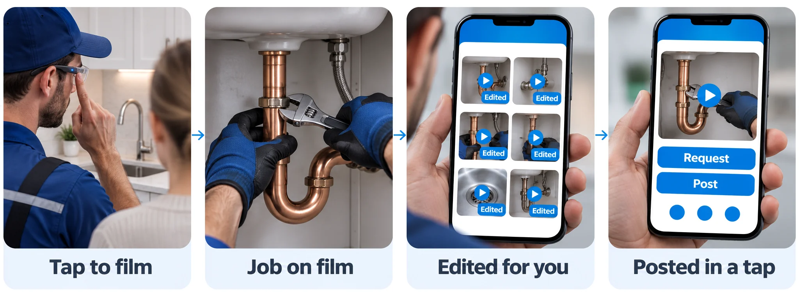
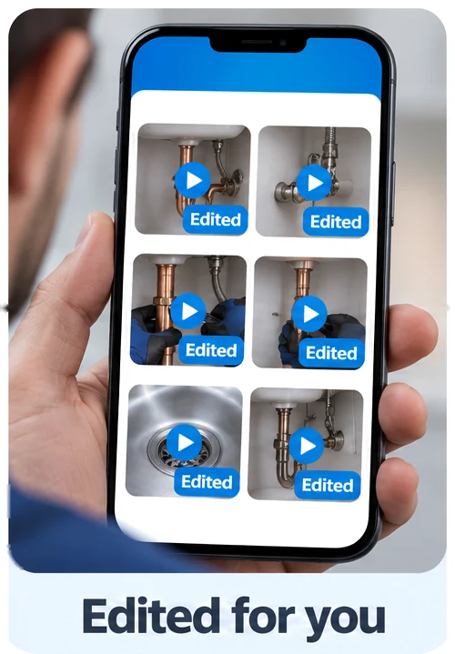

Job Reel


Problem
I film great work all day and never have time to edit it or post it.
Who has it
Solo providers who wear smart glasses or hold a phone on the job.
Harder but still possible
Next idea
What people say
“I run a plumbing business and I’m trying to post videos of my work social media content without hiring a videographer to stand over my shoulder all day.”
u/Big-Performance-5244, Reddit r/Contractor,
2025
Open the post